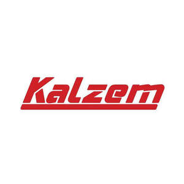

Trade Mark Journal No.2025/022 30 May 2025
UK00004187855 11 April 2025 (6,11,17,35)

- Class 6
- Ores of non-precious metal; common metals; Alloys of common metal; Unprocessed and semi-processed materials of metal, not specified for use ; irons for construction; mats and stirrups of common metals for buildings; common metals in the form of plate, billet, stick, profile, sheet and sheeting; Goods and materials of common metal used for storage, wrapping, packaging and sheltering purposes, metal containers for storage; Wrapping sheets of metal; Sheets of metallic materials for packaging; Shelters of metal, containers of metal (storage, transport), buildings of metal, frames of metal for building, poles of metal for building, metal boxes, packaging containers of metal, aluminium foil, fences made of metal, guard barriers of metal, metal tubes, storage containers of metal, metal containers for the transportation of goods, ladders of metal; metal heating ducts; Cable ducts made of metal [other than electricity]; Ducts of metal for ventilating and air conditioning installations; Doors, windows, shutters, jalousies and their cases and fittings of metal; Non-electric cables and wires of metal; Ironmongery; small hardware of metal; screws of metal; nails; bolts of metal; nuts of metal; pegs of metal; flakes of metal; pitons of metal; metal chains; furniture casters of metal; fittings of metal for furniture; industrial metal wheels; door handles of metal; window handles of metal; hinges of metal; metal latches; metal locks; metal keys for locks; metal rings; metal pulleys; Ventilation ducts, vents, vent covers, pipes, chimney caps, manhole covers, grilles of metal for ventilation, heating, sewage, telephone, underground electricity and air conditioning installations; Metal panels or boards (non-luminous and non-mechanical) used for signalling, route showing, publicity purposes, signboards of metal, advertisement columns of metal, signalling panels of metal, non-luminous and non-mechanical traffic signs of metal; Pipes of metal for transportation of liquids and gas, drilling pipes of metal and their metal fittings, valves of metal, couplings of metal for pipes, elbows of metal for pipes, clips of metal for pipes, connectors of metal for pipes; Safes (strong boxes) of metal; Metal railway materials, metal rails, metal railway ties, railway switches; Bollards of metal, floating docks of metal, mooring buoys of metal, anchors; Metal moulds for casting, other than machine parts; Works of art made of common metals or their alloys, trophies of common metal; Metal closures, bottle caps of metal; Metal poles; metal pillars; scaffolding of metal; metal stakes, metal towers; Metal pallets and metal ropes for lifting, loading and transportation purposes; metal hangers, ties, straps, tapes and bands used for load-lifting and load-carrying; Wheel chocks made primarily of metal; Metal profile laths for vehicles for the purposes of decoration.
- Class 11
- Lighting installations; lights for vehicles and interior-exterior spaces; Heating installations using solid, liquid or gas fuels or electricity, central heating boilers, boilers for heating installations, radiators [heating], heat exchangers, not parts of machines, stoves, kitchen stoves, solar thermal collectors [heating]; Steam, gas and fog generators, steam boilers, other than parts of machines, acetylene generators, oxygen generators, nitrogen generators; Installations for air-conditioning and ventilating; Cooling installations and freezers; Electric and gas-powered devices, installations and apparatus for cooking, drying and boiling: cookers, electric cooking pots, electric water heaters, barbecues, electric laundry driers; hair driers; hand drying apparatus; Sanitary installations, taps [faucets], shower installations, toilets [water-closets], shower and bathing cubicles, bath tubs, toilet seats, sinks, wash-hand basins [parts of sanitary installations], washers for water taps, stuffings (tap valves); Water softening apparatus; water purification apparatus; water purification installations; waste water purification installations; Electric bed warmers and electric blankets, not for medical use; electric pillow warmers; electric or non-electric footwarmers; hot water bottles, electrically heated socks; Filters for aquariums and aquarium filtration apparatus; Industrial cooking installations; Industrial drying installations; Industrial cooling installations; Pasteurizers and sterilizers.
- Class 17
- Unprocessed and semi-processed rubber, gutta-percha, gum, asbestos, mica and substitutes for all these materials; plastics and resins in extruded form; Insulation, stopping and sealing materials: insulation paints, insulation fabrics, insulating tape and band, insulation covers for industrial machinery, joint sealant compounds for joints, gaskets, O-rings for sealing purposes (other than gaskets for motors, cylinders and washer for water taps); Flexible pipes made from rubber and plastic; hoses made of plastic and rubber, including those used for vehicles; junctions for pipes of plastic and rubber; pipe jackets of plastic and rubber; hoses of textile material; junctions for pipes, not of metal; pipe jackets, not of metal; connecting hose for vehicle radiators; Profile laths made of synthetic materials for vehicles for the purposes of decoration.
- Class 35
- Advertising, marketing and public relations; organization of exhibitions and trade fairs for commercial or advertising purposes; design for advertising; provision of an online marketplace for buyers and sellers of goods and services; Office functions; secretarial services; arranging newspaper subscriptions for others; compilation of statistics; rental of office machines; systemization of information into computer databases; telephone answering for unavailable subscribers; Business management, business administration and business consultancy; accounting; commercial consultancy services; personnel recruitment, personnel placement, employment agencies, import-export agencies; temporary personnel placement services; Auctioneering; The bringing together, for the benefit of others, of a variety of goods, namely, Ores of non-precious metal, Common metals and their alloys and semi-finished products made of these materials, irons for construction, mats and stirrups of common metals for buildings, common metals in the form of plate, billet, stick, profile, sheet and sheeting, Metal containers for storage, wrapping sheets of metal, sheets of metallic materials for packaging, shelters of metal, storage containers of metal, containers of metal for transport, buildings of metal, frames of metal for buildings, poles of metal, boxes for storage purposes [metal], packaging containers of metal, aluminium foil, fences of metal, metal barriers, metal tubes, storage containers of metal, metal containers for the storage and transportation of goods, ladders of metal, Doors, windows, shutters, jalousies and their cases and fittings of metal, Non-electric cables and wires of metal, Ironmongery, small hardware of metal, screws of metal, nails, bolts of metal, nuts of metal, pegs of metal, flakes of metal, pitons of metal, metal chains, furniture casters of metal, fittings of metal for furniture, industrial metal wheels, door handles of metal, window handles of metal, hinges of metal, metal latches, metal locks, metal keys for locks, metal rings, metal pulleys, Ventilation ducts, vents, vent covers, pipes, chimney caps, manhole covers, grilles of metal for ventilation, heating, sewage, telephone, underground electricity and air conditioning installations, Metal panels or boards (non-luminous and non-mechanical) used for signalling, route showing, publicity purposes, signboards of metal, advertisement columns of metal, signalling panels of metal, non-luminous and non-mechanical traffic signs of metal, Pipes of metal for transportation of liquids and gas, drilling pipes of metal and their metal fittings, valves of metal, couplings of metal for pipes, elbows of metal for pipes, clips of metal for pipes, connectors of metal for pipes, Safes (strong boxes) of metal, Metal railway materials, metal rails, metal railway ties, railway switches, Bollards of metal, floating docks of metal, mooring buoys of metal, anchors, Metal moulds for casting, other than machine parts, Works of art made of common metals or their alloys, trophies of common metal, Metal closures, bottle caps of metal, Metal poles, metal pillars, scaffolding of metal, metal stakes, metal towers, Metal pallets and metal ropes for lifting, loading and transportation purposes, metal hangers, ties, straps, tapes and bands used for load-lifting and load-carrying, Wheel chocks made primarily of metal, Metal profile laths for vehicles for the purposes of decoration, Lighting installations, lights for vehicles and interior-exterior spaces, Heating installations using solid, liquid or gas fuels or electricity, central heating boilers, boilers for heating installations, radiators [heating], heat exchangers, not parts of machines, stoves, kitchen stoves, solar thermal collectors [heating], Steam, gas and fog generators, steam boilers, other than parts of machines, acetylene generators, oxygen generators, nitrogen generators, Installations for air-conditioning and ventilating, Cooling installations and freezers, Electric and gas-powered devices, installations and apparatus for cooking, drying and boiling: cookers, electric cooking pots, electric water heaters, barbecues, electric laundry driers, hair driers, hand drying apparatus, Sanitary installations, taps [faucets], shower installations, toilets [water-closets], shower and bathing cubicles, bath tubs, toilet seats, sinks, wash-hand basins [parts of sanitary installations], washers for water taps, stuffings (tap valves), Water softening apparatus, water purification apparatus, water purification installations, waste water purification installations, Electric bed warmers and electric blankets, not for medical use, electric pillow warmers, electric or non-electric footwarmers, hot water bottles, electrically heated socks, Filters for aquariums and aquarium filtration apparatus, Industrial type installations for cooking, drying and cooling purposes, Pasteurizers and sterilizers, unprocessed and semi-processed rubber, gutta-percha, gum, asbestos, mica and substitutes for all these materials, plastics and resins in extruded form; Insulation, stopping and sealing materials: insulation paints, insulation fabrics, insulating tape and band, insulation covers for industrial machinery, joint sealant compounds for joints, gaskets, O-rings for sealing purposes (other than gaskets for motors, cylinders and washer for water taps), Flexible pipes made from rubber and plastic, hoses made of plastic and rubber, including those used for vehicles, junctions for pipes of plastic and rubber, pipe jackets of plastic and rubber, hoses of textile material, junctions for pipes, not of metal, pipe jackets, not of metal, connecting hose for vehicle radiators ,Profile laths made of synthetic materials for vehicles for the purposes of decoration enabling customers to conveniently view and purchase those goods, such services may be provided by retail stores, wholesale outlets, by means of electronic media or through mail order catalogues.
KALZEM PLASTİK SANAYİ VE TİCARET LİMİTED ŞİRKETİ
Representative: SMYRNA LTD